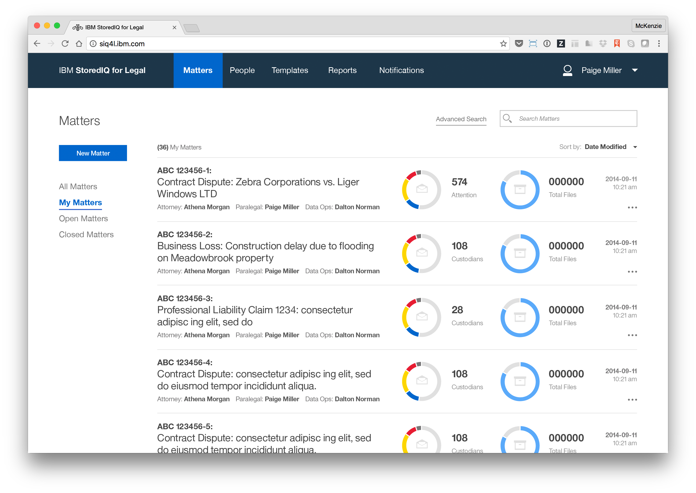

Rethinking human-centered legal e-Discovery
In November 2015, I joined the IBM Analytics Platform team to help build IBM StoredIQ for Legal, an electronic discovery tool designed to help legal staff and IT departments manage legal matters and respond to litigation.
Modern Fortune 500 companies produce an unfathomable amount of information every single day: everything from HR records and financial statements to cat GIFs posted to Slack. Consider the most common form of electronic data created by organizations: email. An average employee at a large company like IBM sends and receives around 50 emails on a normal work day. After just one year of service, this employee would have racked up 13,000 emails. This means that every year a company like IBM sends and receives about 5 billion emails! Storing this data, either on premise or in the cloud is one of the largest expenses most fortune 500 companies face. And all evidence signals that in the years to come, companies will create even more data each year.
While retaining this data is costly, when companies are involved in a lawsuit they must be able to produce evidence when requested. In fact, most industries require that companies retain data for a certain amount of time, regardless of the size.
The focus of StoredIQ for Legal is to give paralegals, attorneys and IT staff the tools they need to discover and produce relevant information when they are facing impending litigation or an internal investigation.
Previous releases of StoredIQ for Legal had made huge strides towards rethinking IBM’s existing portfolio of legal tools into a single, modern product that addresses many aspects of the electronic discovery process. The product itself began as an experiment in a pilot program within IBM Design and was the result of a human-centered redesign of the entire governance portfolio.
When I joined the team, the product allowed customers to organize their legal matters, understand which employees or custodians within their company may have data that’s involved in a matter and notify these custodians that they are legally obligated to not destroy the data in their possession.
In addition to ensuring that employees retain data from their own devices, another important part of the discovery process involves coordinating with the IT teams who manage large data sources or repositories within a company. Legal staff must be able to identify, preserve and collect data wherever it exists in a company, and this was a weakness with the previous iteration of StoredIQ for Legal.
Before this release, the only data sources that a paralegal could identify, preserve and collect data from were servers indexed by another IBM tool called StoredIQ. However, companies are legally responsible for governing and producing data wherever it’s stored, not just in places conveniently indexed by StoredIQ. For the third release of the product, I was tasked with designing an experience that improved the data request process. Specifically, we needed to allow paralegals to gather evidence from any place data may be stored, both physically and digitally.
I joined the team immediately after the second release launched and was able to participate in the kickoff planning workshop for the third release. As this was my first time working on an IBM release from initial research to the delivery of a final product, I was incredibly excited and nervous to learn all about the nitty gritty details involved in shipping something at this scale. It was really helpful to have an insanely talented group of collaborators to lean on and grow with throughout this release.
Leadership:
Team members:
Want to get in touch?